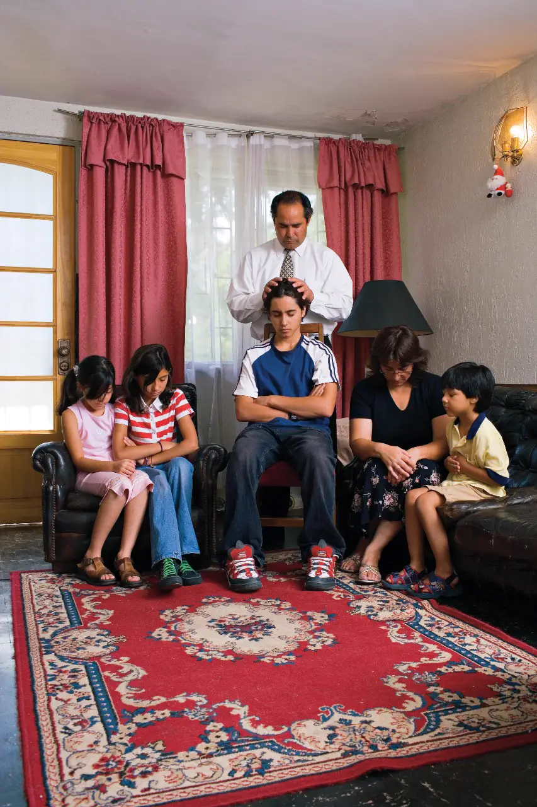

La familia es de Dios
Creemos que la familia no es un invento humano — es una institución divina, creada por Dios. La familia es el lugar donde aprendemos a amar, a perdonar, a servir y a crecer. Es el fundamento de la sociedad y la unidad más importante en la eternidad.
En un mundo donde las familias enfrentan muchos desafíos, el evangelio de Jesucristo ofrece principios que pueden fortalecer y unir a cada familia.

Familias para siempre
Una de las enseñanzas más hermosas del evangelio restaurado es que las familias pueden estar juntas para siempre — no solo «hasta que la muerte nos separe», sino por toda la eternidad.
A través de ordenanzas sagradas realizadas en los templos, los esposos y esposas pueden ser sellados el uno al otro, y los padres a sus hijos, creando lazos que trascienden la muerte.
Cómo fortalecer tu familia
- La oración familiar: Orar juntos como familia invita la guía de Dios al hogar
- El estudio de las Escrituras: Leer las Escrituras juntos fortalece la fe y une a la familia
- La noche de hogar: Dedicar una noche a la semana para estar juntos, aprender y divertirse
- El servicio: Servir juntos a otros crea lazos profundos y enseña valores
- El perdón: Practicar el perdón en el hogar crea un ambiente de paz y amor

El hogar como un refugio
Tu hogar puede ser un lugar de paz, amor y seguridad espiritual. No importa el tamaño de tu familia ni tu situación actual — Dios puede bendecir tu hogar cuando lo invitas a ser parte de él.
Los principios del evangelio de Jesucristo — amor, paciencia, perdón, servicio — son la receta para una familia feliz. No porque sea fácil, sino porque con la ayuda de Dios, es posible.
Fortalece tu familia
Queremos ayudarte a descubrir cómo el evangelio puede bendecir a tu familia. Habla con nosotros.
Contáctanos